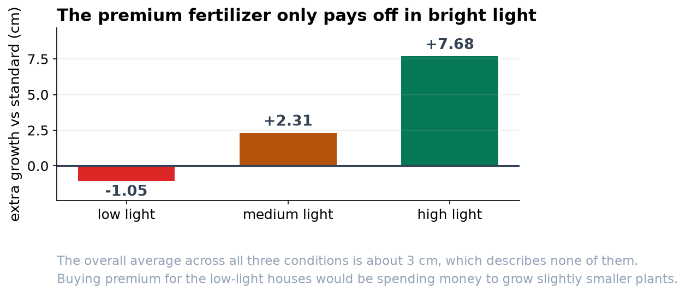

The Premium Fertilizer Pays Off, But Only in Bright Light
At low light it does nothing. At high light it adds nearly eight centimetres of growth.
Recommendation
Buy the Premium fertilizer for your high-light houses only. In bright conditions it added about 7.7 cm of growth per plant, a large and reliable gain. In low light it added nothing (if anything the plants did slightly worse), and at medium light the gain was too small to be sure of. Spending on Premium across the whole operation would waste most of the money.
What we found
We grew 68 plants across six combinations: two fertilizers by three light levels. Light is by far the biggest driver of growth under either fertilizer. The fertilizer itself is a conditional story. Comparing Premium against Standard separately at each light level: at low light the difference was -1.05 cm (not meaningful), at medium light +2.31 cm (still not conclusive), and at high light +7.68 cm, which is both large and statistically certain.


Why the average number would have misled you
If we had simply compared all Premium plants against all Standard plants, ignoring light, Premium would have come out significantly ahead, and that headline would have been technically true and practically wrong. That average blends a small loss, a small gain, and a large gain into one number that matches no growing condition you actually have. This is why the trial crossed the two factors instead of testing them separately.

Before you scale this up
Three cautions. The trial ran in a greenhouse with uniform water, soil, and temperature, so field conditions may differ. Our 'high' light is one specific intensity, and we cannot promise the pattern keeps improving beyond it. And the recommendation is a cost decision as much as a growing one: the gain is real only in bright conditions, so the purchase should follow the light, not the label.